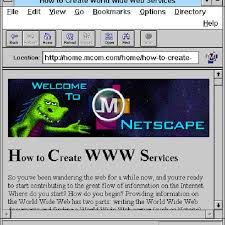
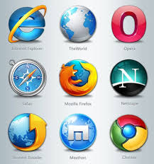

|
NAVEGADORES PRIMORDIASO cientista de computação britânico Tim Berners-Lee criou o primeiro servidor web e o primeiro navegador web gráfico em 1990, enquanto trabalhava no CERN, Organização Europeia de Pesquisa Nuclear, na Suíça. Ele batizou sua nova janela para a internet de "WorldWideWeb". Era uma interface gráfica fácil de usar, criada para o computador NeXT. Pela primeira vez, documentos de texto foram conectados através de uma rede pública — a internet como a conhecemos. Um ano depois, Berners-Lee pediu ao estudante de matemática do CERN Nicola Pellow que escrevesse o Navegador em Modo de Linha, um programa para terminais básicos de computadores. Em 1993, a web explodiu. Universidades, governos e empresas privadas, todos viram oportunidades na internet aberta. Todos precisavam de novos programas de computador para acessá-la. Naquele ano, o Mosaic foi criado no Centro Nacional de Aplicações de Supercomputação (NCSA), na Universidade de Illinois em Urbana-Champaign, pelo cientista de computação Marc Andreessen. Foi o primeiro navegador web popular e o ancestral inicial do Mozilla Firefox. |
GUERRA DE NAVEGADORESEm 1995, o Navegador Netscape não era a única maneira de ficar online. A gigante de software para computadores Microsoft licenciou o código do antigo Mosaic e criou sua própria janela para a web, o Internet Explorer. O lançamento iniciou uma guerra. A Netscape e a Microsoft trabalharam freneticamente para fazer novas versões de seus programas, cada um tentando superar o concorrente com produtos melhores e mais rápidos. A Netscape criou e lançou o JavaScript, que deu aos sites capacidades de computação poderosas que nunca tiveram antes (também criaram a infame tag As coisas saíram um pouco do controle em 1997, quando a Microsoft lançou o Internet Explorer 4.0. A equipe construiu uma letra "e" gigante e colocou sorrateiramente no gramado da sede da Netscape. A equipe da Netscape prontamente derrubou o "e" gigante e colocou seu próprio mascote dinossauro Mozilla em cima. A Microsoft começou então a distribuir o Internet Explorer com seu sistema operacional Windows. Em 4 anos já tinha 75% do mercado e em 1999 tinha 99% do mercado. A empresa enfrentou litígios antitruste por causa desta jogada, e a Netscape decidiu tornar seu código aberto e criou a organização sem fins lucrativos Mozilla, que criou e lançou o Firefox em 2002. Sabendo que a existência de um monopólio de navegador não era do interesse dos usuários e da web aberta, o Firefox foi criado para fornecer escolha aos usuários da web. Em 2010, o Mozilla Firefox e outros tinham reduzido a fatia de mercado do Internet Explorer para 50%. Outros competidores surgiram durante o final dos anos 90 e início dos anos 2000, incluindo Opera, Safari e Google Chrome. O Microsoft Edge substituiu o Internet Explorer com o lançamento do Windows 10 em 2015. |
NAVEGADORES HOJE EM DIAAtualmente, existem poucas maneiras de acessar a internet. Os principais competidores são Firefox, Google Chrome, Microsoft Edge, Safari e Opera. Durante a última década, dispositivos móveis se tornaram a maneira preferida de acessar a internet. A maioria dos usuários da internet só usa navegadores móveis e aplicativos pra acessar online. Versões móveis dos principais navegadores estão disponíveis para dispositivos iOS e Android. Embora esses aplicativos sejam muito úteis para fins específicos, fornecem apenas acesso limitado à web. No futuro, a web provavelmente vai se afastar ainda mais de suas origens de hipertexto para se tornar um vasto oceano de experiências interativas. A realidade virtual tem estado no horizonte há décadas (pelo menos desde o lançamento do Lawnmower Man em 1992 e do Nintendo Virtual Boy em 1995), mas a web pode finalmente trazê-la às massas. Agora o Firefox tem suporte para WebVR e A-Frame, que permitem aos desenvolvedores construir sites de realidade virtual, com facilidade e rapidez. A maioria dos dispositivos móveis modernos tem suporte a WebVR, podendo ser facilmente usados como headsets com simples caixas de papelão. Uma web de realidade virtual 3D como a imaginada pelo autor de ficção científica Neal Stephenson pode estar chegando em breve. Se for o caso, o próprio navegador web pode desaparecer completamente e se tornar uma verdadeira janela para outro mundo. Qualquer que seja o futuro da web, a Mozilla e o Firefox estarão lá para os usuários, garantindo que tenham ferramentas poderosas para experienciar a web e tudo que ela tem a oferecer. A web é para todos, e todos deveriam ter controle sobre sua experiência online. É por isso que existe no Firefox ferramentas para proteger a privacidade dos usuários e nunca vende-se dados de usuários a anunciantes. |
este site foi gerado por clube municipal de programadores erechinenses CLUMPE
clique aqui se quiser fazer parte desse clube
Feito por José Antônio Tramonitini Franceschi